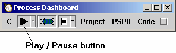
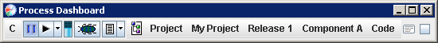
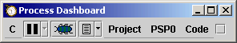
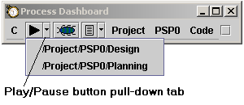

The play/pause button gives access to the timer that is built into the dashboard.

The dashboard timer makes it easy to measure the amount of time spent on various tasks. When you start the timer, it will automatically make appropriate entries in your time log for the currently active project/task.
When the timer is stopped, the paused icon will have a soft blue glow:

When the timer is running, the play icon will have a soft green glow:

It is not necessary to stop the timer before changing the active task. You can leave the timer in "play" mode as you move from one task to another, and it will properly finalize one entry in the time log, and open another.
When you start the timer on a new task, you will notice that the dashboard will not create an entry in the time log until you have spent a full minute there; this is by design. Navigating from one task to another may require multiple interactions with the active task selector, which necessarily implies that the "active" project/task will momentarily pass through several intermediate states before finally arriving at the desired task. You would not want the dashboard to create extraneous entries in the time log for all those intermediate tasks; therefore, the dashboard waits and creates the time log entry only after you have logged 60 seconds worth of elapsed time to an activity.
When you start the timer, it will make a short "clicking" sound to let you know it is timing you. You can leave the timer running as you move from task to task and project to project, and it will play the "timing sound" as you navigate to each new project/task. Once again, the sound is there to remind you that the dashboard is timing you; the sound will not play if the timer is not running. Therefore, as you move from one project/task to another, if you expect to hear the sound and do not (or vice versa), check the state of the timer.
When you first begin using the dashboard, it may be difficult to remember to start and stop the dashboard timer. A timing reminder feature is available to help; see the system tray icon help topic for more information.
The play/pause button contains a pull-down control that can be used to quickly jump to a project/task where you have recently recorded time. This provides another way of navigating to a task where you were recently working.

In this example, the individual had recently been working through the phases in a PSP2.1 project, when they were interrupted by an incoming email message. After finishing with the email message, they could select one of the entries in this pull-down list. The dashboard would activate the selected task and begin logging time there.
As this example illustrates, the items in the pull-down are not limited to the phases of the current project. Therefore, the pull-down control is very useful when you are juggling several activities. If you keep bouncing back and forth between several unrelated tasks, you can quickly jump to a recent activity and log time there by using the pull-down menu.
If you accidentally leave the timer running and begin logging time to a task that has been marked complete, a warning message will be displayed. The only purpose of this warning is to give you a heads-up in case you are logging time by accident. If you do not wish to receive these alerts, you can indicate that preference as you dismiss the dialog.